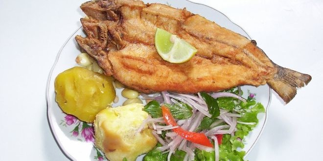
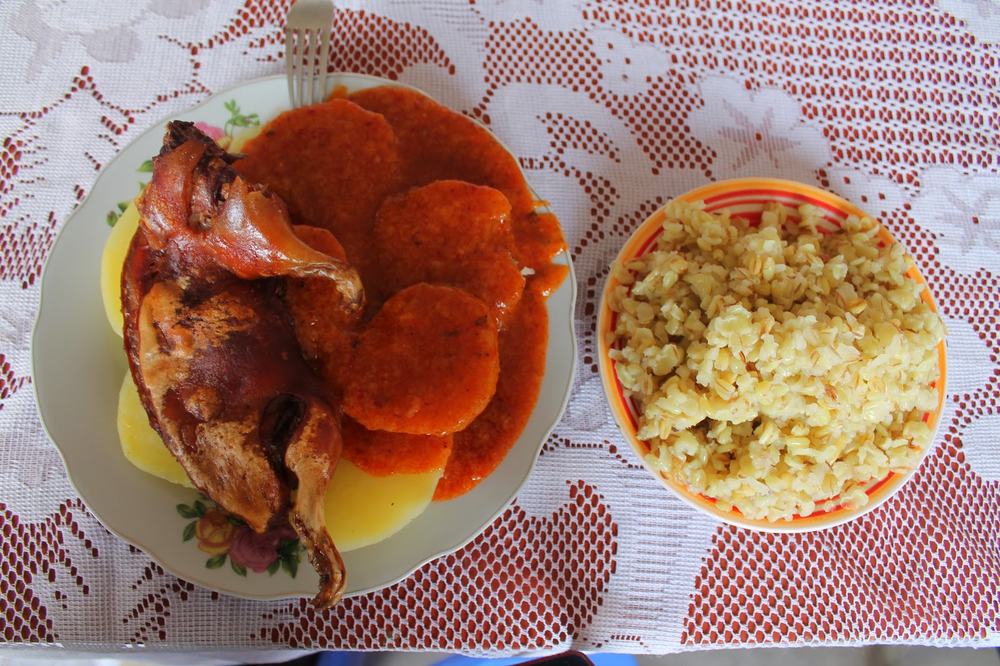
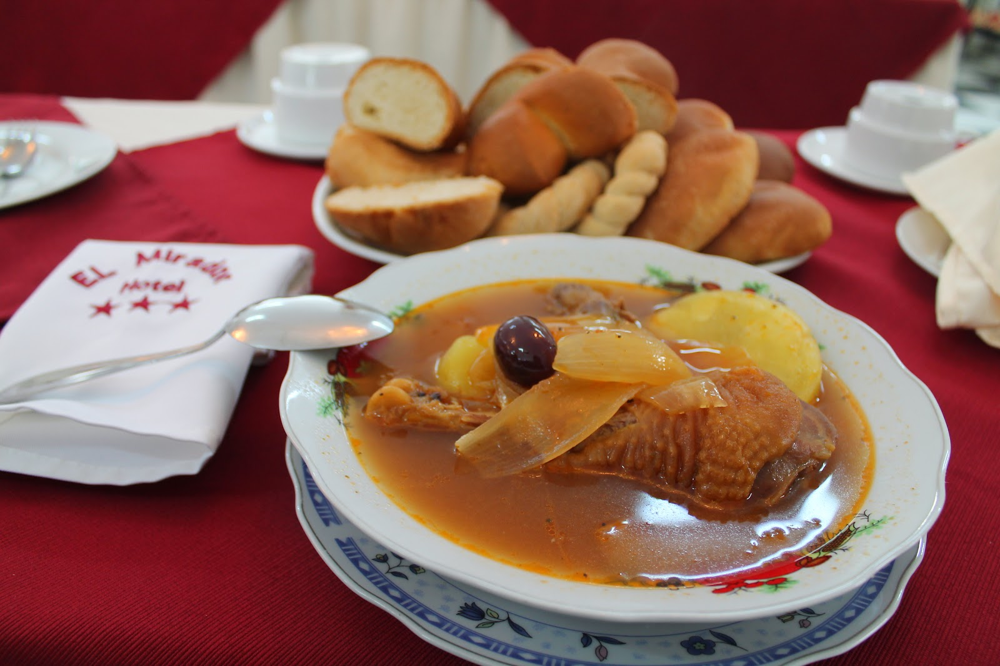

Comidas tipicos de pomabamba
Actividad de lectura
En la provincia de Pomabamba existen las comidas típicos son: el picante de cuy, el chichincaldo (caldo elaborado con chicha de jora y gallina) y el ceviche de chocho, y la truchada son potajes emblemáticos de esta parte de la región Ancash.


